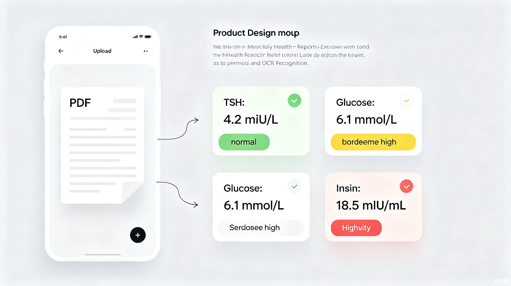
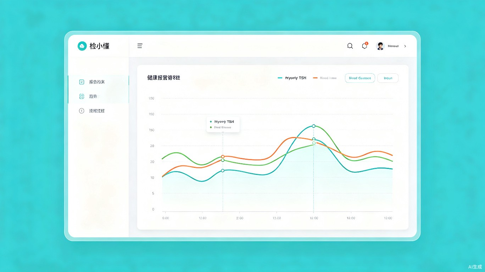

上传 PDF 或拍照，OCR 自动提取指标，按类别归档到个人健康档案
甲状腺、血糖、性激素等指标的折线图，参考范围一目了然
复查到期、指标异常变化、持续临界，三类提醒覆盖全程
一键导出趋势图 + 异常列表 PDF，就诊时直接带给医生
报告分散丢失 -- 不同医院的报告在各小程序里，三个月后就查不到了
无法跨医院对比 -- 想看历年变化，得手动翻多个平台，根本看不清趋势
忘记复查时间 -- 甲状腺、血糖等指标需要每 3-6 月复查，但经常忘记
就诊说不清变化 -- 医生问"最近指标怎么样"，拿不出清晰的数据
每 3-6 月复查 TSH、FT3、FT4、抗体等，追踪长期趋势
性激素六项、AMH 卵巢储备、胰岛素抵抗等指标持续监测
空腹血糖、HbA1c、胰岛素定期复查，关注趋势走向
帮家人归档报告、追踪趋势，就诊时出示清晰数据
上传 PDF 或拍照，系统自动提取指标，与上次结果对比，高亮变化项。设好下次复查提醒。
打开 Dashboard，一眼看到甲状腺和代谢的趋势图。TSH 涨到 5.8？橙色高亮提示接近上限。
点击"导出摘要"，生成包含趋势图表和异常列表的 PDF。医生直接看到"近一年 TSH 上升趋势"。
收到提醒"甲状腺检查距上次 5 个月，建议尽快复查"。看到历史趋势，决定这周去。
支持 PDF 和拍照上传，OCR + AI 自动提取指标数值。按甲状腺功能、糖代谢、胰岛素、性激素六项、卵巢储备等类别自动归档，支持手动修正。

甲状腺面板：TSH / FT3 / FT4 折线图，灰色带标注参考范围，超出自动变色。代谢面板：血糖 + 胰岛素趋势，自动计算 HOMA-IR 指数。

复查到期提醒（距上次超过周期）、异常变化提醒（如 TSH 上涨 >20%）、临界持续提醒（连续 2 次接近上限）。不遗漏任何重要节点。
| 类别 | 关键指标 | 参考范围 | 复查周期 |
|---|---|---|---|
| 甲状腺功能 | TSH | 0.27 - 4.20 mIU/L | 3-6 个月 |
| FT3 / FT4 | 3.10-6.80 / 12.00-22.00 pmol/L | 3-6 个月 | |
| 糖代谢 | 空腹血糖 | 3.90 - 6.10 mmol/L | 3-6 个月 |
| HbA1c | 4.00 - 6.00% | 3 个月 | |
| 胰岛素 | 空腹胰岛素 | 2.60 - 24.90 mIU/mL | 3-6 个月 |
| 性激素六项 | FSH / LH / E2 / P / T / PRL | 各阶段标准范围 | 按需 |
| 卵巢储备 | AMH | 2.00 - 6.80 ng/mL | 6-12 个月 |
| 对比维度 | 现有 AI 工具 | 检小懂 |
|---|---|---|
| 核心能力 | 单次问答式解读 | 归档 + 趋势追踪 + 提醒 |
| 跨时间对比 | 不支持 | 自动生成历年趋势图 |
| 内分泌专项 | 通用体检，无专项 | 甲状腺/性激素/AMH 专项面板 |
| 复查提醒 | 不支持 | 周期提醒 + 异常变化提醒 |
| 就诊支持 | 无 | 一键导出趋势摘要 PDF |
| 数据隐私 | 云端存储 | 本地存储优先 |
分散报告集中管理，趋势图替代手动翻找，就诊前 1 分钟导出摘要。大幅降低健康信息管理的时间成本。
建立长期指标追踪意识，可视化趋势帮助及时发现异常变化。特别是内分泌指标，持续追踪对疾病管理至关重要。